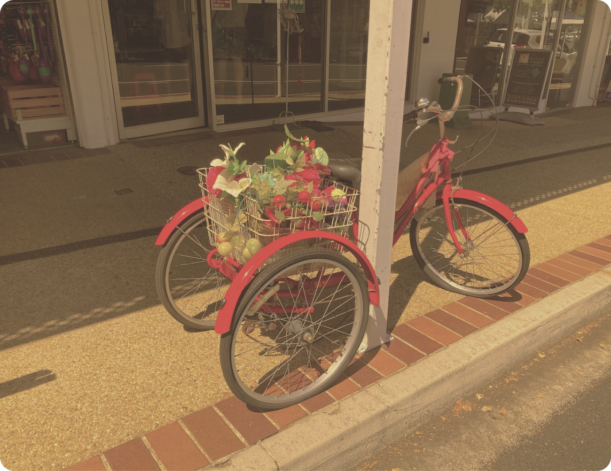
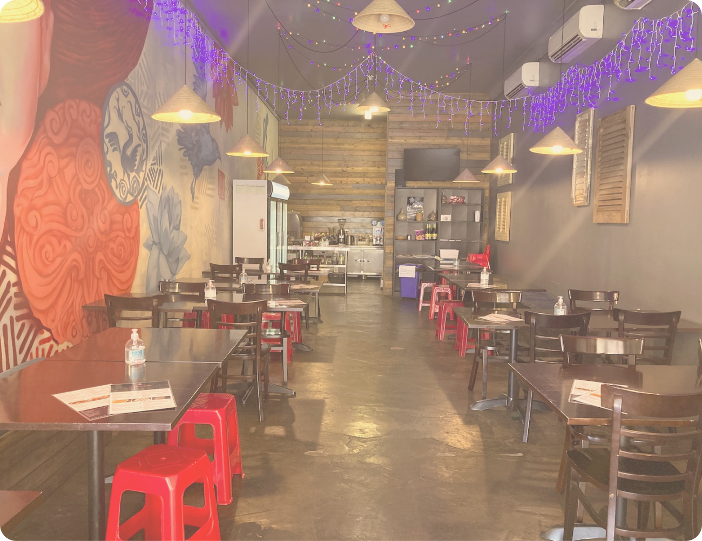
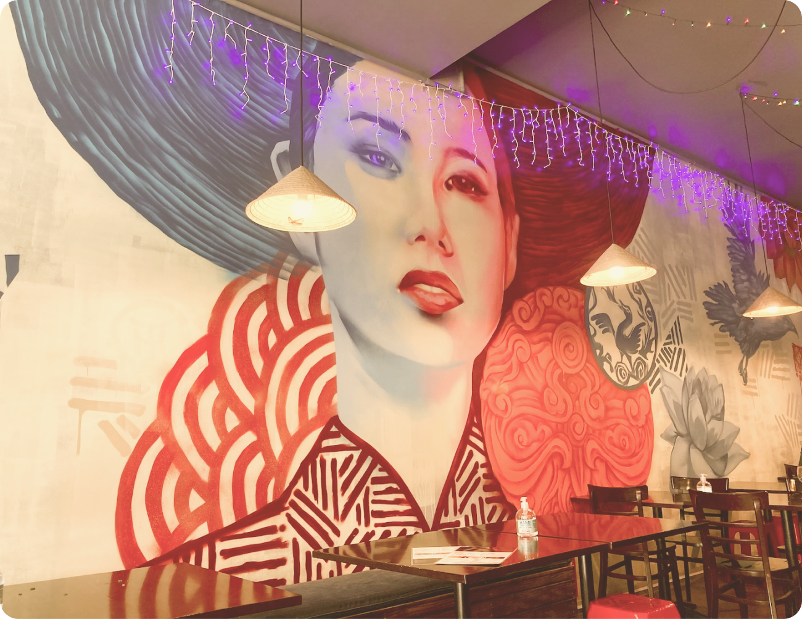
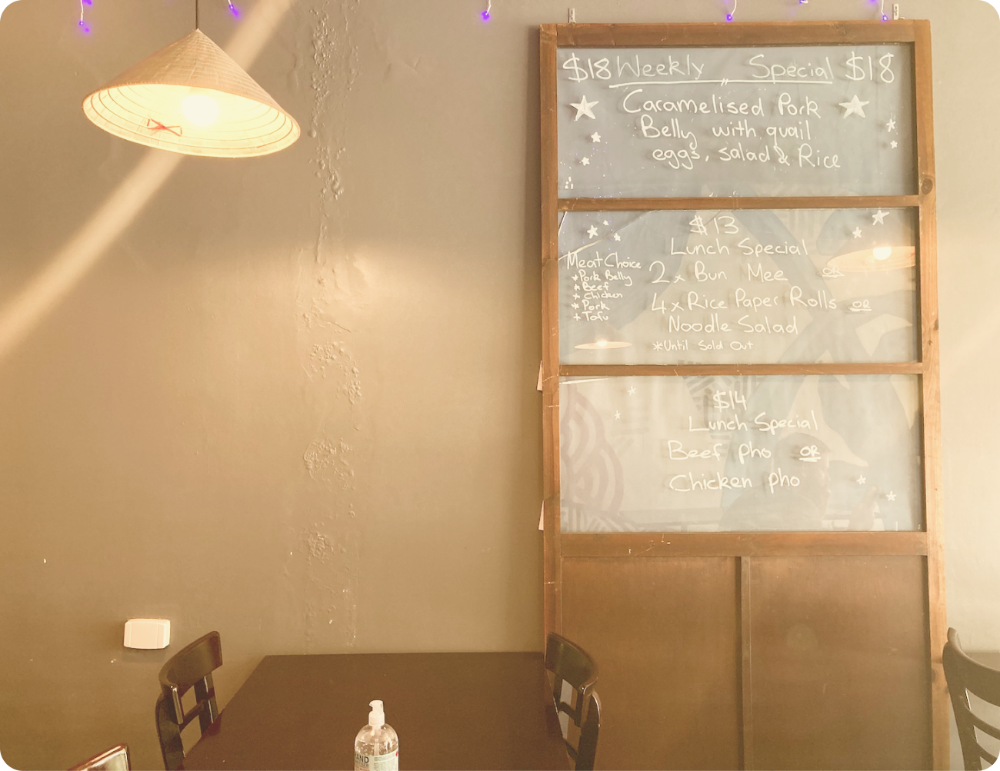
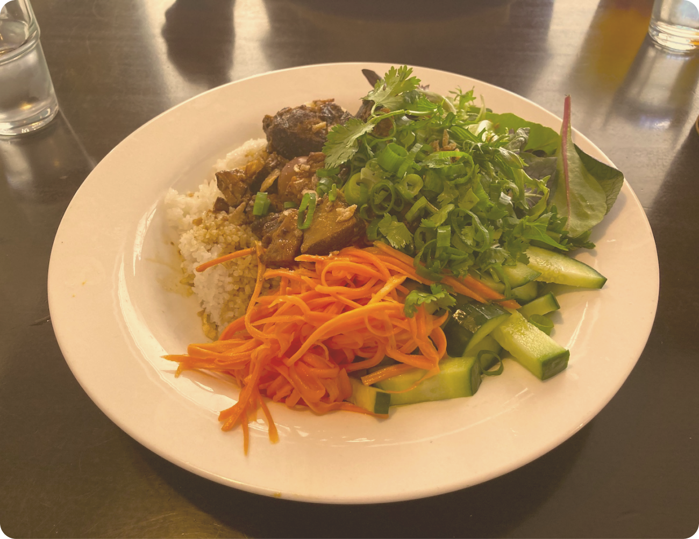
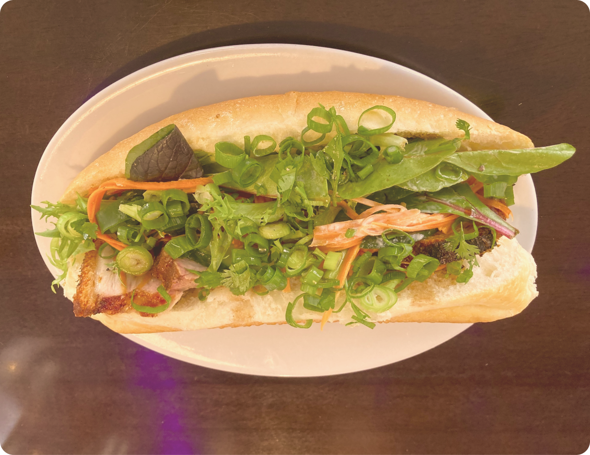

You’ll find Viet Street Eat from it’s cute red bike parked out the front. With an ever changing menu there’s always something new to try at this Vietnamese restaurant that specialises in street style foods.
The interior is brightly decorated with a really relaxed feel. It’s always busy though, popular with locals and tourists alike, so book ahead if you want to make sure you get a table. Don’t stress if you miss out though, their takeaway is great too!
Viet Street Eat is the type of place you’ll be begging the kids to stop taking Instagram photos and to just sit down and eat. There are murals on one side and carefully curated displays everywhere.
The specials change every week depending on what’s in season and the ingredients are always impressively fresh.
Portion sizes at Viet Street Eat tend to be on the larger size, so prepare to go home feeling incredibly full! It’s hard to decide between the weekly specials (pictured) but we highly reccommend the Street Rice and Beef Pho from the regular menu.
Viet Street Eat is open for lunches too. If you’re craving Banh Mi (pictured) make sure you get there at lunchtime because this delicious meal isn’t available at night. And make sure you order the duck pancakes with homemade Hoisin Sauce.... They are truly delightful!
